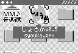

タイトル画面

ゲーム画面
火を消すブロック移動型 パズルゲーム
しょうか
Ver.0.5
by まどか AND へぼじるし
タイトル画面 |
ゲーム画面 |
※画面のキャプチャにはまかべひろし
さんのPceCapsを使用しています
| 概要 |
| このアプリケーションは、火を消す「消火」をテーマとしたP/ECE用のブロック移動型パズルゲームです。 プレイヤーは主人公の「消太郎（しょうたろう）」となって、水のブロックを放水して移動させ､ステージ内の全ての火ブロックを消火したらステージクリアとなります。 ステージは全１０面用意してありますが､ソースプログラムも標準で添付してありますので､ユーザが自由にステージを変更・追加することができます。 また、プロのゲームプログラマさん程ではないですが､いろいろな画面エフェクトのテクニックを盛り込んでいるので､何かの参考になれば光栄です。 ちなみに、この「しょうか」は拙作のMSX用同人ゲーム「The しょうか」をP/ECE用に移植・アレンジしたものです（＾＾； 今回タイトル画面・エンディング画面およびゲーム中BGMはへぼじるしさんに協力していただきました。 |
| 使用方法 |
 PIECEコミュニケータを使って、"syouka.pex"をP/ECEに転送してください。 または、PIECEコミュニケータから"syouka.srf"を実行してください。 すると、クリエイタ名が表示された後、タイトル画面になりますので、STARTボタンでゲームを開始してください。 ＜ルール＞ ゲーム中には3種類の水系ブロックと3種類の火系ブロックが存在し､水系のブロックを放水して移動させ､火系ブロックにぶつけて消火するというルールになっています。 ちなみに、ブロックを放水して移動させると、何かにぶつかるまで水系ブロックは移動しつづけます。 以下にブロックの説明を表示します。 これは、ゲーム画面の一番下にも表示されていますが､小さくてちょっと見づらいので､ここでよく確認してくださいね（＾＾； 図：ブロック説明 簡単に説明しますと､左から「しずく」・「バケツ」・「消防車」・「タバコの火」・「たき火」・「ビル火災」となっていて、一応それぞれの頭文字を表示しています。 で、左側3つの水系ブロックを右側の火系ブロックにぶつけて消火するわけですが、この消火にも一定のルールがあって、常識的に考えてもらえればよいのですが､「しずく」は「タバコの火」しか消せなくて､「バケツ」だと「タバコの火」も「たき火」も消すことができます。そして、もちろん「消防車」は全ての火系ブロックを消火可能です。 これを表にすると以下のようになります。
また、同じ水系ブロック同士をぶつけた場合、その水系ブロックはパワーアップします。 パワーアップの例） しずく ＋ しずく ＝ バケツ あと、種類の違う水系ブロックや､消火できない火系ブロックにぶつけた場合は､何も起こらずそのままブロックが止まるだけなので､このルールをおぼえておいてくださいね。 以上のルールに従って、ステージ内の全ての火系ブロックを消火したら、ステージクリアです。 ステージは全１０面です。 ＜ゲーム中の操作＞ 使用するボタンは十字PADとAボタンのみで、操作は以下のとおりになっています。 ・十字PAD プレイヤーキャラの移動 ・十字PAD＋Aボタン 放水して水ブロックを動かす （ブロックを移動させたい方向に 十字PADを押しながらAボタンです） ＜ギブアップ＞ ゲーム中に制限時間は存在しないので､失敗してクリア不可能となったら、STARTボタンを押してギブアップしてください。 そのステージの最初に戻ります。 それでは、がんばって全面クリアを目指してくださいね。 |
| 更新履歴 |
| 2002/11/05 Ver.0.5 ネット初公開 |
| 注意事項 |
| このプログラムはフリーソフトウェアです。 著作権は、まどかが保持します。 このプログラムを使用してのいかなる損害に対しても、作者は責任を負いませんので､注意してくださいね。 再配布や、雑誌などへの掲載に関しては、基本的に自由ですが、できれば作者にご一報ください。 まだまだ開発途中の段階なので、バグなどがありましたら、ご連絡ください。 メールはこちらへ↓ madoka@olive.plala.or.jp ＨＰ まどかの世界 |